Welcome
A good place to think, and also to wonder
At mid-year, let's come together, reflect on where we are, how our Pods function, and together decide what to improve in our approaches, market offerings and strategies. Then commit to our leadership team and ourselves to execute it the rest of the year.
Let's allow Penang to inspire us. It's a small island with a UNESCO old town, a green hill in the middle, hawker food that people fly in for, and a coastline that's a five-minute walk from where we're staying. Productive days, and evenings worth staying out for.
We've arranged some great dinners: we're going back to the same favourites we found on last year's Penang offsite. I hope some of you fly in early and fly out late to explore the rest of the island and its great food.
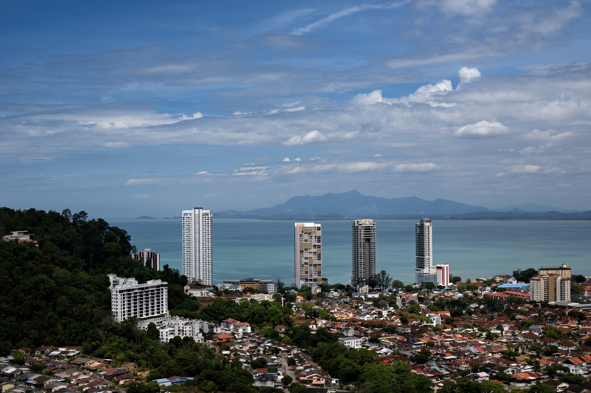
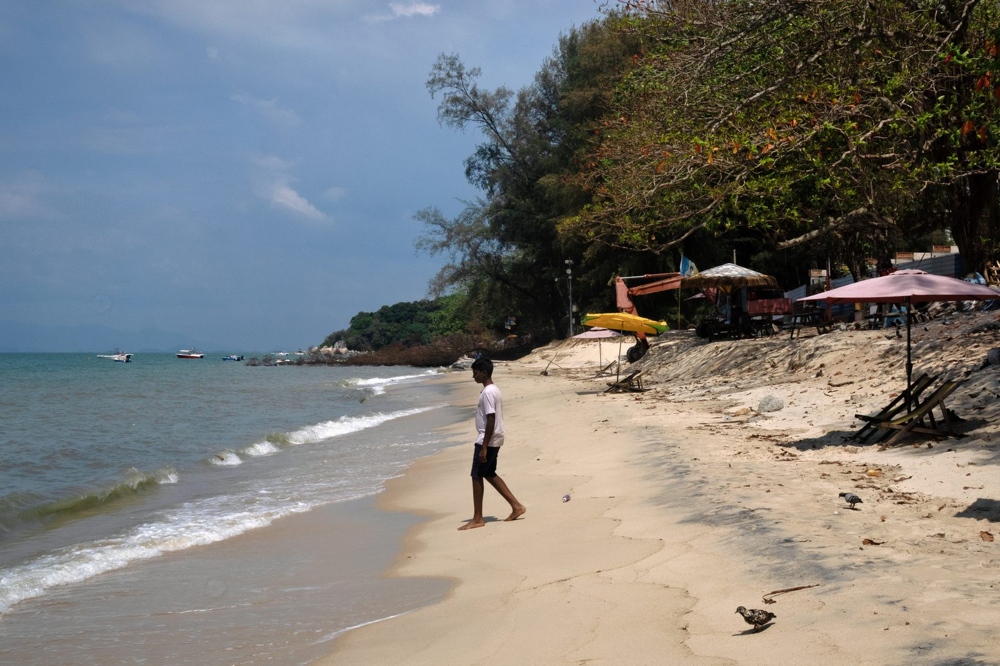
Where you'll be
The island, roughly
An illustrated map, not a street map — pins are approximate, for orientation. Tap a pin, or a name in the list, for the details.
- Stay / venue
- Workshop dinners
- Sights
- Arrival / transit
Getting around
Practical tips before you land
Five minutes of prep saves the usual arrival friction. Everything below is the short version.
- Fill in the arrival card Do the Malaysia Digital Arrival Card (MDAC) online before you travel — it's the official Immigration form and it's much easier done at home than in the queue.
- Use the auto gates Most visitors can clear immigration at the automated gates rather than a counter — faster, and it saves a passport stamp.
- Install Grab Penang's rideshare app, and the easiest way to get anywhere. Set it up on your phone before you fly.
- Airport pickup There's a marked Grab pickup zone just outside the Arrivals hall at Penang International (PEN).
- Airport → hotel Usually about 30–45 minutes to Gurney Bay Hotel; allow 45–60 minutes if you land in rush hour.
- Carry some ringgit Cards work in restaurants, but street vendors and hawker stalls still prefer cash. Small RM notes are the useful ones.
- Dress for the heat Warm and humid all year, with sudden downpours. Light clothes, and something for aggressive indoor air conditioning.
Travel times are estimates — Penang traffic has opinions.
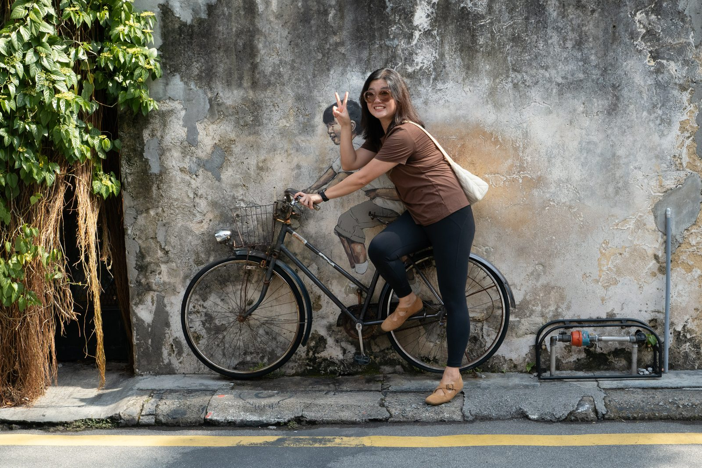
What to see
George Town is a walking city
The old town is small enough to cross on foot, and rewards getting slightly lost in it.
A short list worth your free afternoon
Fort Cornwallis sits at the northeast tip, walkable from the old town and from the esplanade. It's where the British landed in 1786, and it's the easiest place to see how the whole city grew out of that corner.
The UNESCO heritage core is the main event: shophouses in every state of repair, clan houses, temples and mosques on the same street, and murals that turn a wall into a queue of photographers. Armenian Street and Chulia Street are a good spine to start from.
For a change of temperature, Penang Hill — Grab to the Lower Station at Air Itam, take the funicular up, and look back down at the island you've been working on. Go early or late; the middle of the day is the crowded part.
The clan jetties at Chew Jetty — wooden houses on stilts over the water — are ten minutes from Fort Cornwallis. Worth the short walk even if you only stay for a photo at the end of the pier.
If you have a longer stretch, Kek Lok Si in Air Itam is the big hilltop temple complex — same Grab zone as Penang Hill, and easy to pair with a funicular ride if the timing works.
Closer to the hotel, an evening stroll along Gurney Drive is the low-effort option: sea air, the promenade, and dinner choices without booking a car.
And when you need five quiet minutes, any kopitiam will do — strong kopi, toast, and a plastic chair that isn't in a meeting room.
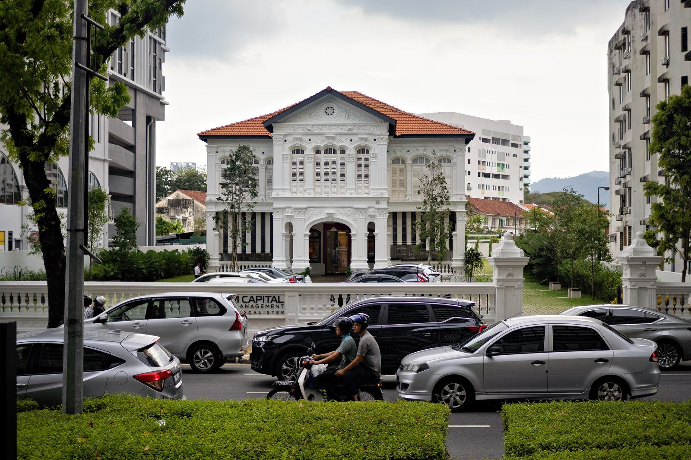
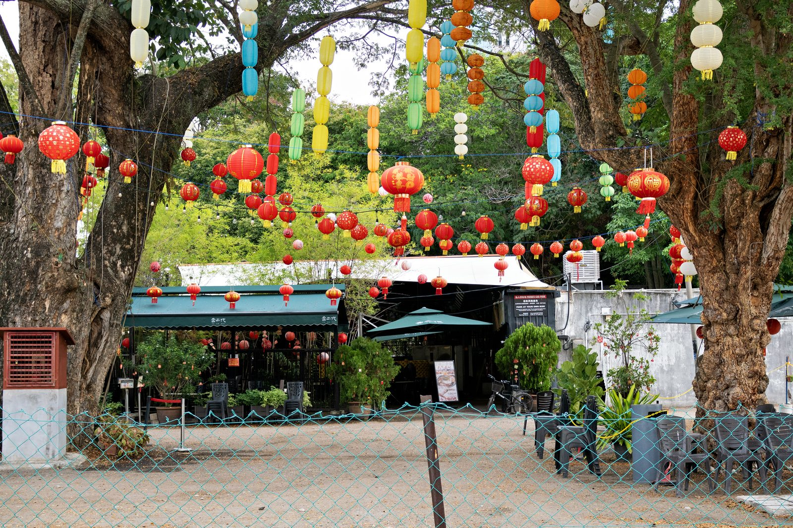
Food · the actual reason people come
Eat like it's the point of the trip
Penang is one of the great street food cities. You do not need a reservation, a plan, or much money — you need to be willing to sit on a plastic stool.
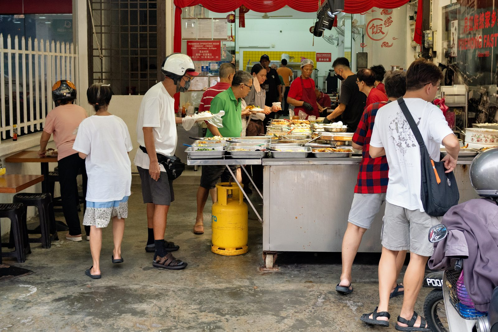
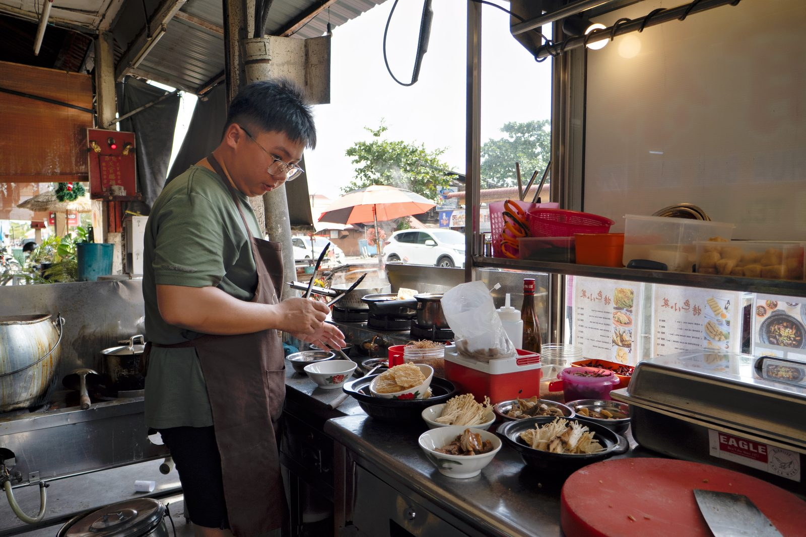
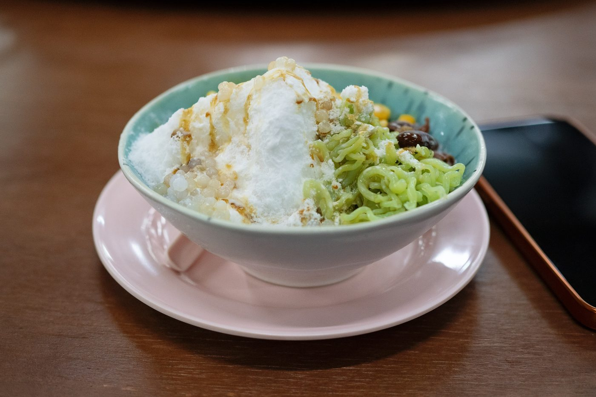
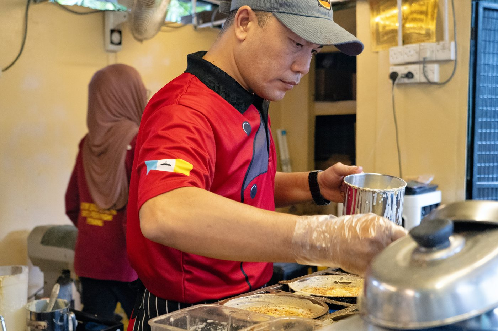
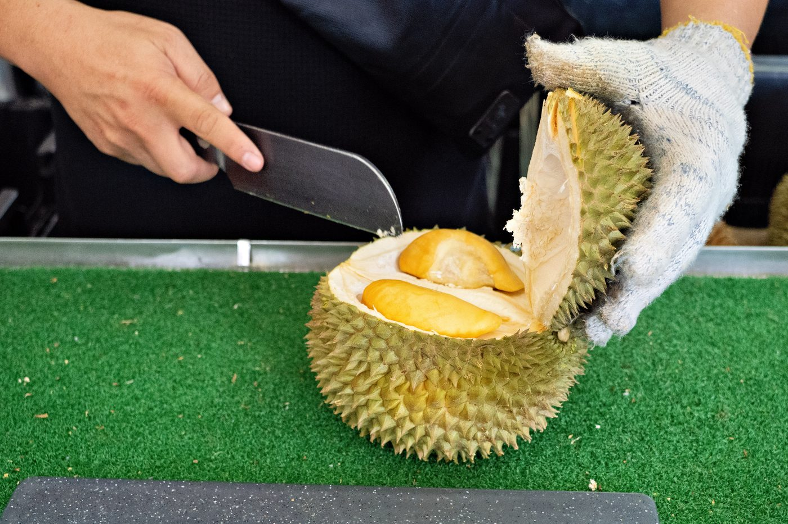
Start with the classics — char koay teow, Hokkien prawn mee, assam laksa, chee cheong fun — then keep going. Ask anyone where their favourite stall is and you'll get a firm answer and a rival opinion from the next table. Dessert is cendol or ais kacang, and if it's durian season, be brave.
I've been working through Penang's noodle bowls one stall at a time and writing each one up. If you want somewhere specific to aim for between sessions, start here:
Workshop dinners
-
Arrival evening
Bali Hai Seafood Market
Gurney Drive, walking distance from the hotel. Choose from the tanks, eat by the water. Michelin Guide →
-
Workshop dinner
Ferringhi Garden
Batu Ferringhi, a short drive along the north coast. Garden tables, lanterns, long conversations. TripAdvisor →
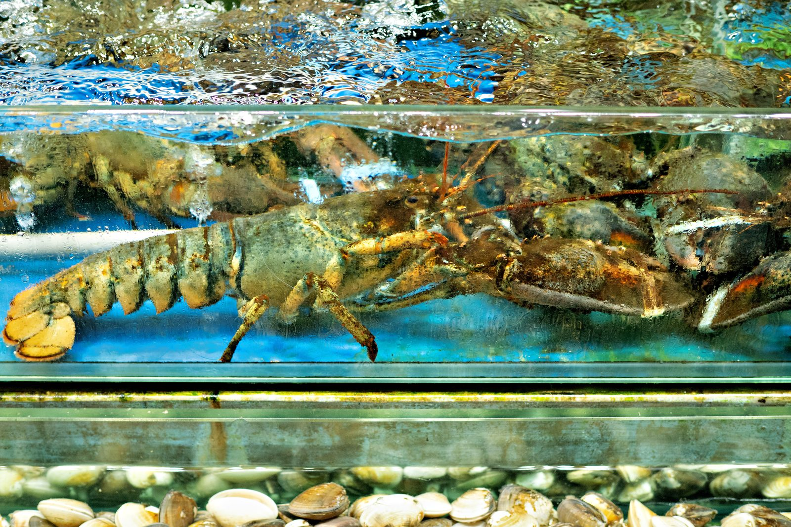
Last time
We've done this before, and it worked
A few frames from the December 2025 Penang offsite, for anyone wondering what the evenings look like.
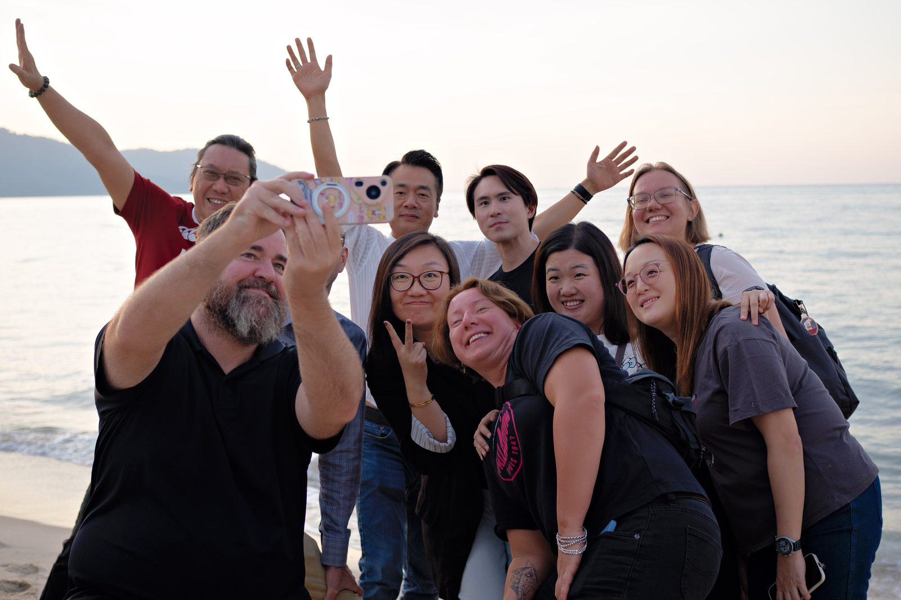
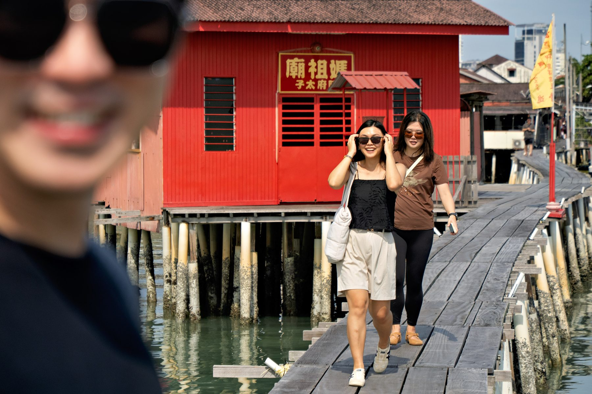
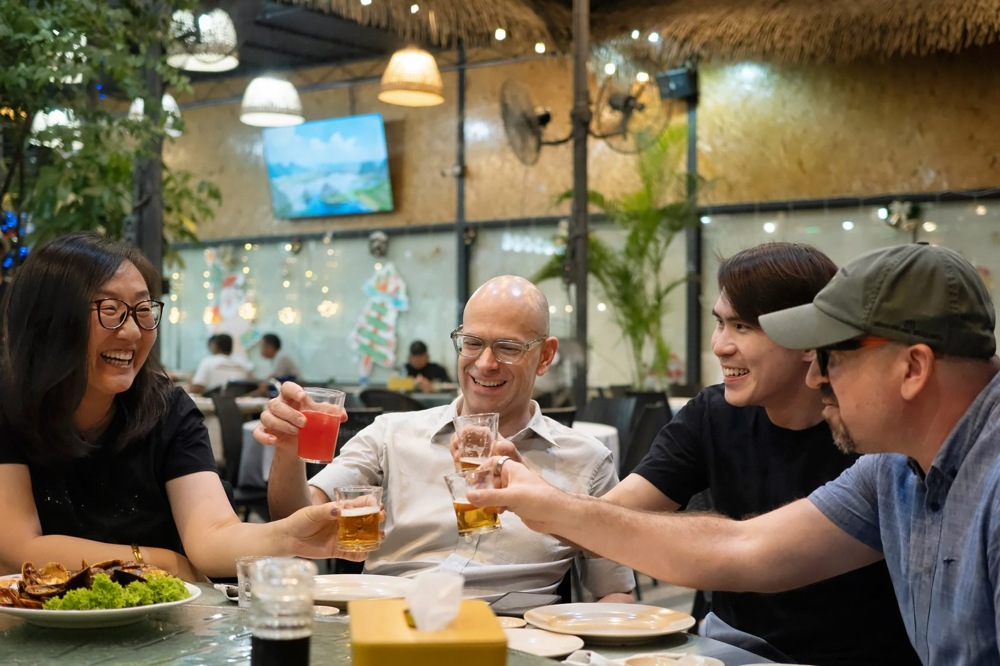
While you're here
What's actually on this week
Penang Pulse is my weekly round-up of what's happening on the island — events, markets, new restaurants, stalls and popups, refreshed every week. It's the best place to check for something to do on a free evening, because it'll be current when you're here and this page won't be.
Have a look the week you arrive, and star anything you fancy.
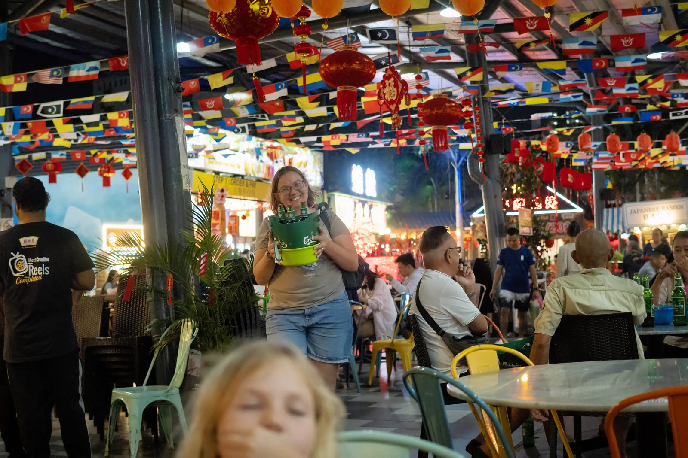